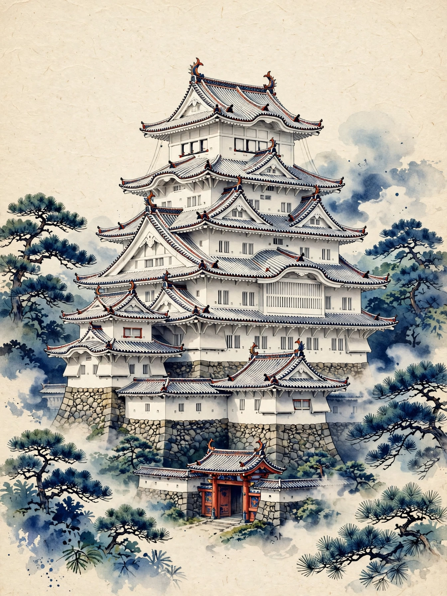
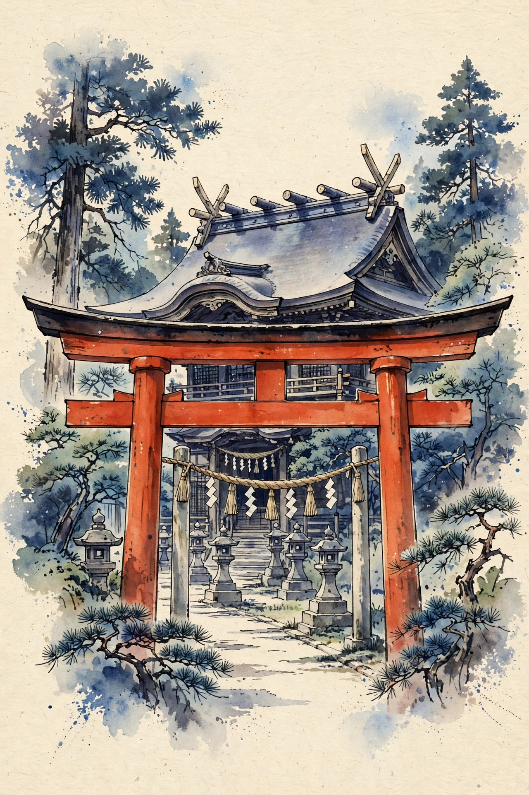

級のご案内 GRADES
各検定には、学習の深さに応じた3つの級があります。まずは3級から、教科書を読み進めながらステップアップしていく設計です。いずれの級も出題は10問・7問以上の正解で合格です。
3級
入門 ― まずはここから
城と神社の基礎知識を問う入門の級です。教科書の各章の「要点」を押さえれば十分に挑戦でき、初めての方や、これから城めぐり・神社めぐりを始めたい方に向けたレベルです。
2級
中級 ― 教科書をひととおり
教科書全5章の内容をひととおり理解していることが求められる中級の級です。天守の形式や石垣の技法、社殿の様式や祭神など、本文の細部まで読み込んで挑むレベルです。
1級
上級 ― 最上位の認定
歴史・建築・祭祀への深い知識に加え、現地で見分ける鑑識力が求められる最上位の級です。3級・2級の土台のうえに、名城や著名な神社への幅広い理解がある方の到達点です。
受験の流れ HOW IT WORKS
STEP
教科書で学ぶ
各検定の教科書（全5章）を読みます。各章末の「要点」が、そのまま試験の出題範囲です。
STEP
試験を受ける
級とお名前を入力して開始。問題プール20問から10問が出題され、回答のたびに解説を確認しながら進めます。
STEP
認定証を受け取る
7問以上の正解で合格。認定番号つきの認定証が表示され、印刷して手元に残せます。
城と神社のイベント予定表 UPCOMING EVENTS
これから開催されるお城と神社の行事を、日程順にまとめています。紅葉まつりやライトアップ、例大祭や七五三・初詣など、現地を訪れる計画づくりにご活用ください。
受験料とデータの取り扱い FEE & DATA
受験料：現在は無料で受験できます。正式な受験料は決定後にこのページでご案内します。
データの取り扱い：受験・採点・認定証の発行は、すべてお使いのブラウザの中で完結します。入力したお名前や受験履歴は、お使いの端末のブラウザ内（localStorage）にのみ保存され、サーバーへ送信・保存されることはありません。ブラウザのデータを消去すると履歴も消えますので、認定証は印刷して保管してください。
認定証・認定番号の照合
合格すると、この端末のブラウザ内に認定証が保存されます。あわせて、認定番号の形式を確認できる照合フォームをご用意しています。
この端末で発行した認定証
認定番号の照合（形式確認）
認定証に記載された認定番号（例：SHIRO-20261026-0001）を入力すると、番号の形式が正しいかどうかを確認できます。この照合は形式の確認のみです。正式な照合は今後の運用開始後にご案内します。
城と神社のブログ
名城めぐりと神社めぐりの実践情報、そしてお城検定・神社検定に役立つ知識を発信しています。記事中のおすすめ本にはAmazon.co.jpへのリンク（PR）を含みます。
城と神社のイベント予定表
お城と神社でこれから開かれる行事を、日程順の予定表にまとめました。2026年10月〜2027年2月の開催分を掲載しています。各行事の出典リンクから、最新の実施状況を確認できます。
ご利用にあたって：この予定表は、2026年10月27日時点で主催者・自治体・報道などの公開情報で確認できた行事をまとめたものです。日程・時間・料金は変更や中止になる場合があります。お出かけ前に、必ず各行事の出典リンクや主催者の公式案内で最新の情報をご確認ください。
長期の取り組み：福井県坂井市の丸岡城では、天守の保存修理工事が2027年11月までの予定で進められています。工事の様子はブログ記事「丸岡城、天守保存修理の現場をライブ中継で公開」でも紹介しています。
ショップ ― お城グッズ・おすすめ本
城めぐりと検定学習に役立つ、実在の書籍を紹介します。リンク先はAmazon.co.jpです。
PR 本ページの商品リンクはAmazonアソシエイト・リンクです。
当サイトは、Amazon.co.jpを宣伝しリンクすることによってサイトが紹介料を獲得できる手段を提供することを目的に設定されたアフィリエイトプログラムである、Amazonアソシエイト・プログラムの参加者です。価格・在庫はリンク先のAmazon.co.jpでご確認ください。
受験履歴
この端末のブラウザ内に保存された受験履歴です。サーバーには送信・保存されていません。ブラウザのデータを消去すると、この履歴も消えます。